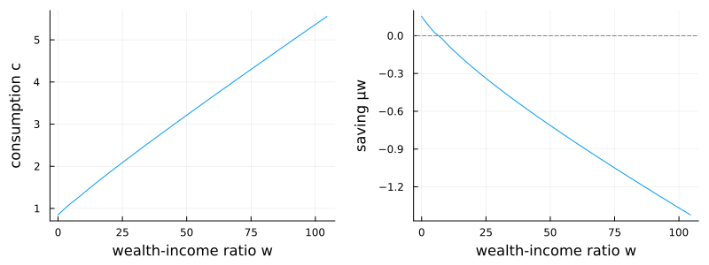

Wang–Wang–Yang (2016): consumption and saving with recursive utility
Wang, Wang, and Yang (2016) study optimal consumption and saving when labor income follows a geometric Brownian motion, $dY = \mu Y\,dt + \sigma Y\,dZ$, and the household has recursive (Epstein–Zin) preferences with elasticity of intertemporal substitution $\psi$ and risk aversion $\gamma$. Wealth accumulates as $dX = (r X + Y - C)\,dt$ subject to a borrowing limit. Because income is a GBM and preferences are homothetic, the value function is homogeneous and the problem collapses to a single ODE in the wealth-to-income ratio $w = X/Y$. Writing $p(w)$ for the scaled value function — equivalently, total wealth (financial plus human) per unit of income — it solves
\[0 = \left(\frac{(r + \psi(\rho - r))\,p'^{\,1-\psi} - \psi\rho}{\psi - 1} + \mu - \tfrac{\gamma\sigma^2}{2}\right) p + \bigl((r - \mu + \gamma\sigma^2)\,w + 1\bigr)\, p' + \tfrac12 \sigma^2 w^2\left(p'' - \gamma\,\frac{p'^{\,2}}{p}\right),\]
with the consumption–income ratio recovered from $c = (r + \psi(\rho - r))\, p\, p'^{-\psi}$.
The model
The parameters live in a struct:
using EconPDEs, Plots
Base.@kwdef struct WangWangYangModel
μ::Float64 = 0.015 # expected growth rate of labor income
σ::Float64 = 0.1 # volatility of labor income
r::Float64 = 0.035 # risk-free rate
ρ::Float64 = 0.04 # discount rate
γ::Float64 = 3.0 # relative risk aversion
ψ::Float64 = 1.1 # elasticity of intertemporal substitution
wmin::Float64 = 0.0 # borrowing limit (minimum wealth-income ratio)
wmax::Float64 = 1000.0 # maximum wealth-income ratio (grid upper bound)
endMain.WangWangYangModelThe state space
We build the grid and the initial guess first, because they fix the names used everywhere else. The grid is a NamedTuple whose key is the state variable (w, the wealth-to-income ratio); the guess is a NamedTuple whose key is the unknown function (p), one starting value per grid point. These names are what reappear inside the equation below — e.g. pw_up will be the forward finite difference of p in w.
The state $w$ runs from the borrowing limit to a large upper bound on a grid that is denser near the constraint. The initial guess $p = 1 + w$ reflects total wealth as financial plus one unit of human wealth.
m = WangWangYangModel()
stategrid = (; w = range(m.wmin^(1/2), m.wmax^(1/2), length = 100).^2)
guess = (; p = 1 .+ stategrid[:w])(p = [1.0, 1.1020304050607082, 1.4081216202428322, 1.9182736455463727, 2.632486480971329, 3.5507601265177025, 4.673094582185491, 5.999489847974695, 7.529945923885316, 9.264462809917356 … 827.4462809917355, 845.9137843077237, 864.5853484338332, 883.4609733700642, 902.5406591164167, 921.8244056728905, 941.3122130394856, 961.0040812162023, 980.9000102030406, 1001.0],)The equation
We now write the function encoding the HJB equation. Following the package convention, it takes the current state (a grid point) and u (each unknown together with its finite-difference derivatives there) and returns the time derivative of each unknown.
We upwind on the physical wealth drift $\mu_w$ of the controlled state, falling back to $\mu_w = 0$ when the borrowing constraint binds.
function (m::WangWangYangModel)(state::NamedTuple, u::NamedTuple)
(; μ, σ, r, ρ, γ, ψ, wmin, wmax) = m
(; w) = state
(; p, pw_up, pw_down, pww) = u
# Newton can try negative marginal values, so cap implied consumption instead of flooring derivatives.
cmax = 100.0 * (1 + max((r - μ + σ^2) * w, 0.0))
# Upwind on the physical wealth drift of the controlled state process.
c_up = pw_up > 0 ? min((r + ψ * (ρ - r)) * p * pw_up^(-ψ), cmax) : cmax
μw_up = (r - μ + σ^2) * w + 1 - c_up
if μw_up >= 0
pw = pw_up
c = c_up
μw = μw_up
else
c_down = pw_down > 0 ? min((r + ψ * (ρ - r)) * p * pw_down^(-ψ), cmax) : cmax
μw_down = (r - μ + σ^2) * w + 1 - c_down
if (μw_down <= 0) && (w > wmin)
pw = pw_down
c = c_down
μw = μw_down
else
# If the two candidates straddle zero OR drift is negative at minimum asset threshold
# we impose drift μw = 0.
μw = 0.0
c = 1 + (r - μ + σ^2) * w
pw = (c / ((r + ψ * (ρ - r)) * p))^(-1 / ψ)
end
end
# At the top, we use the solution of the unconstrained problem, i.e. pw = 1 (a reflecting boundary would also work but is less elegant).
pt = - ((((r + ψ * (ρ - r)) * pw^(1 - ψ) - ψ * ρ) / (ψ - 1) + μ - γ * σ^2 / 2) * p + ((r - μ + γ * σ^2) * w + 1) * pw + σ^2 * w^2 / 2 * (pww - γ * pw^2 / p))
return (; pt), (; c, μw)
endWith the equation, grid, and guess in hand, pdesolve solves the stationary system, imposing the boundary condition $p'(w) = 1$ — which pins the marginal value of wealth — at both ends:
result = pdesolve(m, stategrid, guess, bc = (; pw = (1.0, 1.0)))EconPDEResult
zero: p (100)
saved: p, c, μw
residual_norm: 1.921518502320282e-9The solution
The consumption–income ratio and the saving rate, over the low-wealth region:
ws = stategrid[:w]
idx = 1:div(length(ws), 3) # left third of the grid, where the curvature is
p1 = plot(ws[idx], result.saved[:c][idx]; xlabel = "wealth-income ratio w", ylabel = "consumption c", legend = false)
p2 = plot(ws[idx], result.saved[:μw][idx]; xlabel = "wealth-income ratio w", ylabel = "saving μw", legend = false)
hline!(p2, [0.0]; color = :gray, linestyle = :dash)
plot(p1, p2; layout = (1, 2), size = (800, 300))
Consumption (left) is increasing and concave in the wealth-to-income ratio, steepest near the borrowing constraint where the marginal propensity to consume is highest. The saving rate (right) is largest for constrained, low-wealth households and declines as wealth rises toward its target — the shadow value of the borrowing constraint fading as financial wealth accumulates.
This page was generated using Literate.jl.